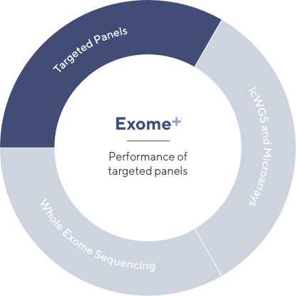

Bringing the benefits of multiple assays into one
Helix’s Exome+® assay has been carefully optimized to provide the benefits of lcWGS, whole exome sequencing, microarrays, and targeted panels — all in one assay.
Targeted Panels
Panels are often used in clinical settings because they’re low cost and provide high quality coverage of specific, pre-defined genomic regions of interest. While useful in certain settings, such assays are limited by their narrow focus.
While useful in certain settings, such assays are limited by their narrow focus. With ≥ 99.5% call rate across ~600 genes relevant to many disease states, the Exome+ assay enables you to run multiple panel-grade analyses with a single sample.
Targeted Panels
Panels are often used in clinical settings because they’re low cost and provide high quality coverage of specific, pre-defined genomic regions of interest. While useful in certain settings, such assays are limited by their narrow focus.
While useful in certain settings, such assays are limited by their narrow focus. With ≥ 99.5% call rate across ~600 genes relevant to many disease states, the Exome+ assay enables you to run multiple panel-grade analyses with a single sample.
Targeted Panels
Panels are often used in clinical settings because they’re low cost and provide high quality coverage of specific, pre-defined genomic regions of interest. While useful in certain settings, such assays are limited by their narrow focus.
While useful in certain settings, such assays are limited by their narrow focus. With ≥ 99.5% call rate across ~600 genes relevant to many disease states, the Exome+ assay enables you to run multiple panel-grade analyses with a single sample.
A future proofed assay
There are several advantages to running panels in the presence of a whole exome, including flexible test design, flexible re-testing, and increased functionality.
Flexible test design
The Exome+ assay provides the flexibility needed to build a comprehensive panel that can be expanded over time. With ~20,000 genes sequenced in each sample, every gene becomes a candidate for inclusion. And, while we have ensured the highest call rates across those genes that are most likely to belong to a panel, the Exome+ assay delivers high call rates for all genes beyond this core set.
Sequence once, query often

The Exome+ assay provides the flexibility needed to build a comprehensive panel that can be expanded over time. With ~20,000 genes sequenced in each sample, every gene becomes a candidate for inclusion. And, while we have ensured the highest call rates across those genes that are most likely to belong to a panel, the Exome+ assay delivers high call rates for all genes beyond this core set.
Comprehensive PGx

The Exome+ assay provides the flexibility needed to build a comprehensive panel that can be expanded over time. With ~20,000 genes sequenced in each sample, every gene becomes a candidate for inclusion. And, while we have ensured the highest call rates across those genes that are most likely to belong to a panel, the Exome+ assay delivers high call rates for all genes beyond this core set.